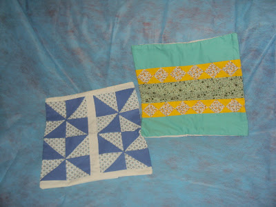
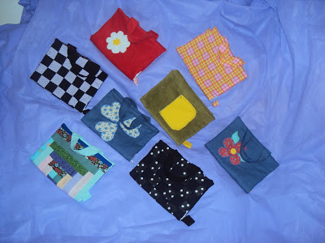
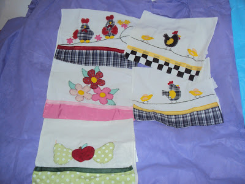
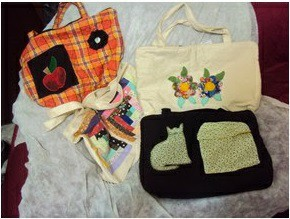
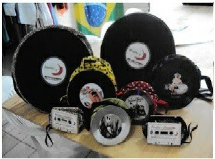
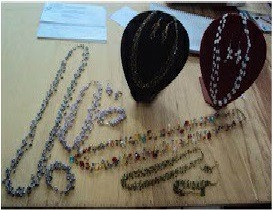
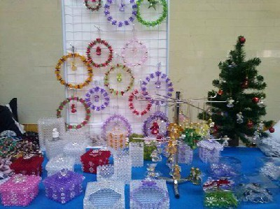
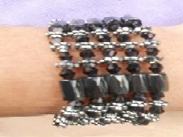
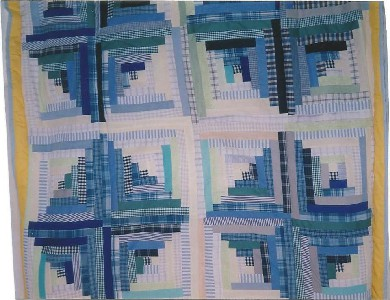

Capas para almofadas

Capas para livros e agendas

Panos de prato

Bolsas

Reciclagem de disco de Vinil

Bijuterias e Pedraria

Trabalhos Manuais

Pulseira de imã

Brincos artesanais
Colcha em Patchwork, retalhos em tecido
